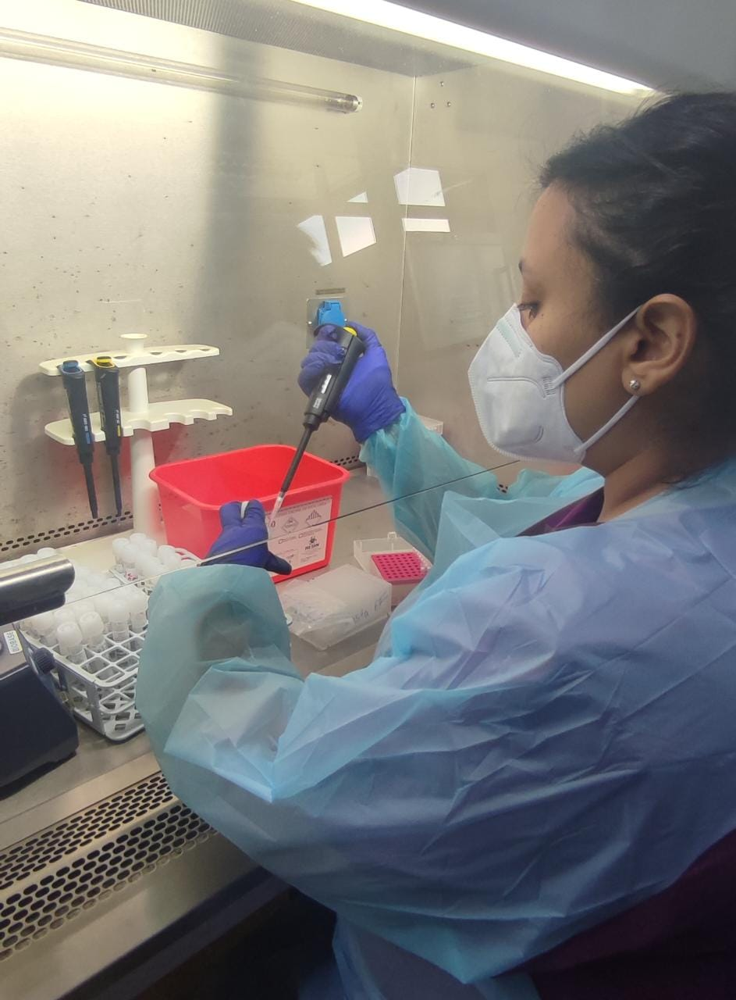

Experiencia Laboral

Tecnólogo Médico con Mención en Laboratorio Clínico. Hematología y Banco de sangreT
Profesional cuarto turno en el área Biología Molecular, procesamiento mediante extracción, amplificación y verificación de resultados PCR SARS-CoV 2 y análisis de mutaciones asociadas a variantes.

Futura Desarrolladora Full stack JavaScript
Un desarrollador Full Stack JavaScript es el profesional capaz de crear proyectos tanto en el Front End como en el Back End de una aplicación o desarrollo web, utilizando lenguaje de programación JavaScript, siendo capaz de entregar un proyecto de inicio a fin.